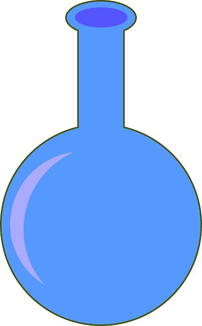

Why?
Step 1
Timer
About Us

At h2ocounts.com, we believe that water conservation is essential. We make it easy to realize the amount of water you waste in something you do in your every-day life; taking a bath.
Why is this important?
This is important not just because your water bill goes up, but also because it is very bad for the environment. Water waste affects polar life among other things, such as the fact that only 1% of the earth’s water is drinkable and we need to use it wisely.